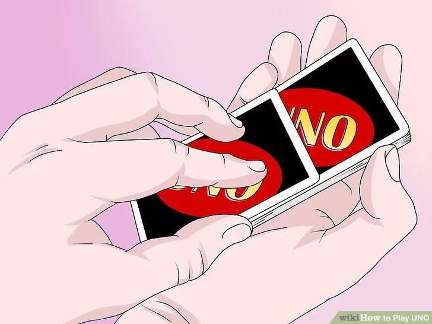
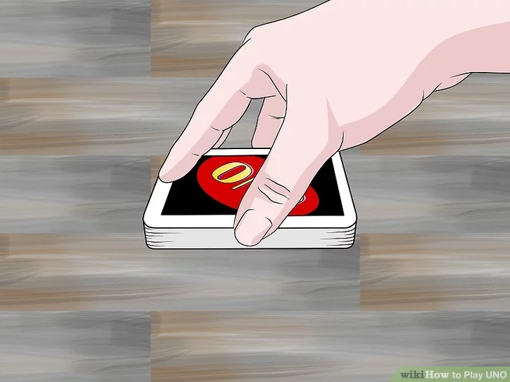
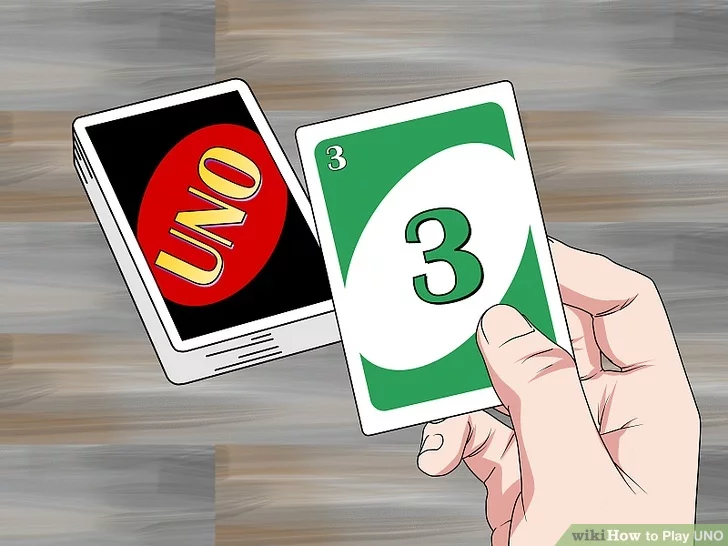
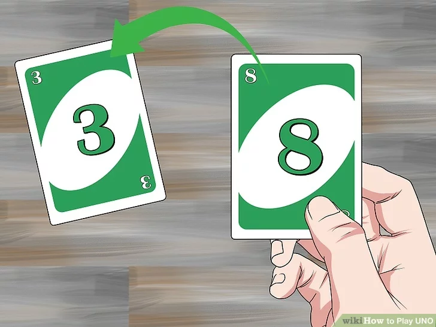
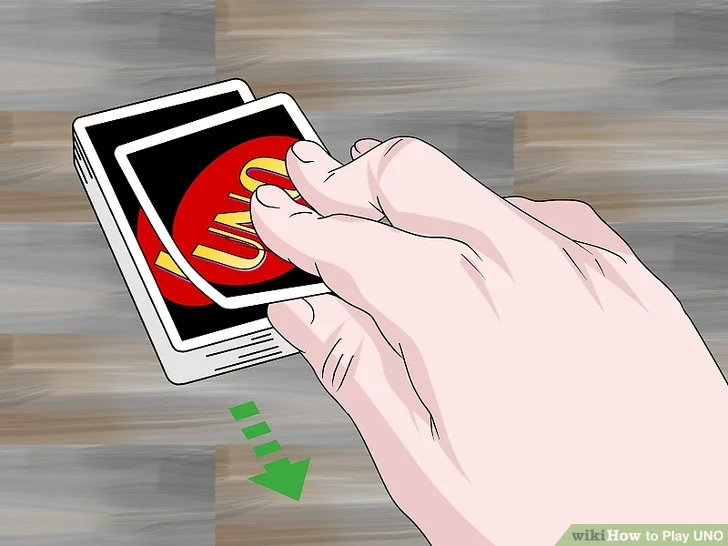
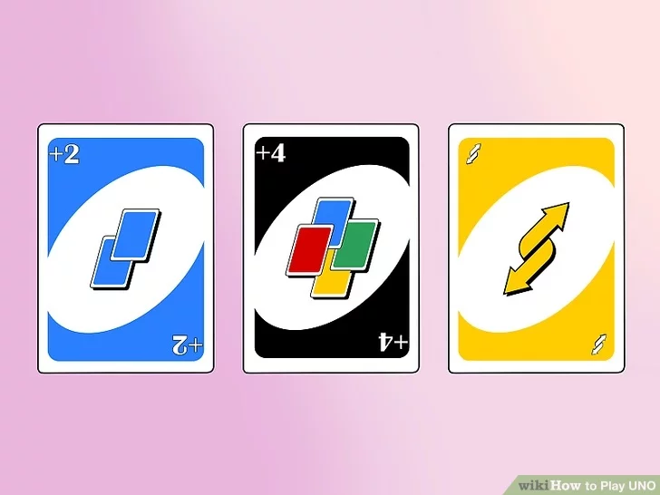
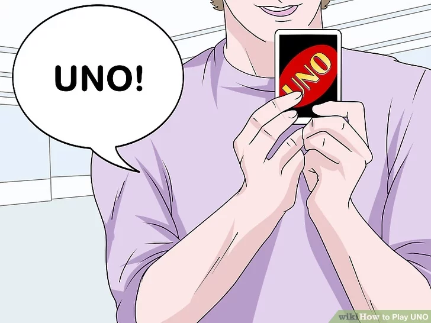
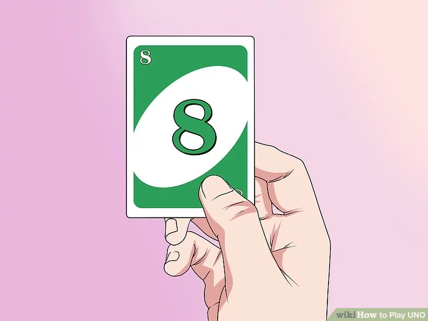
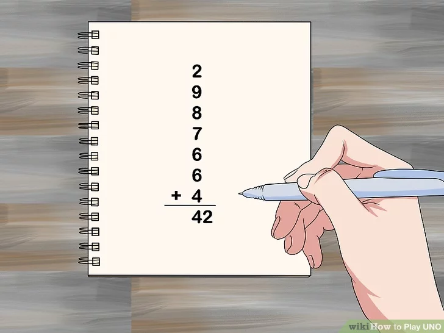

If you're looking for a fun card game to play with friends, give Uno a try! Each player gets dealt a hand of 7 Uno cards to start. To play, you’ll match one of your cards with the card that's been dealt from the draw pile. The first player to get rid of all of their cards wins the round. Then all players tally up their scores. The game continues until one person scores 500 points. We’ll walk you through the main Uno instructions, and a few variations you can try once you get the hang of this fun card game.
Download Instructions
For Saving Instructions Offline Click The Button Below
1
Shuffle the cards and deal 7 cards to each player.

Get out a pack of Uno cards and shuffle all 108 cards. Then, make sure each person who wants to play gets 7 cards. Direct the players to keep their cards face down.[1]
You can play Uno with 2 to 10 players. Players should be at least 7 years old.
If you need a deck of Uno cards, you can find options for purchase here.
2
Put the rest of the Uno cards in the center of the table

. Keep the cards face down in a stack. These cards will make the draw pile which players will take from throughout the game.[2]
3
Turn over the top card from the draw pile to start the game.

Place the top card from the draw pile next to the draw pile, but leave it facing up. You'll use this card to start the game and it will become the discard pile.[3]
4
Play a card to match the color, number, or symbol on the card.

The player to the left of the dealer should lay down a card from their hand if it matches the color, number, word, or symbol on the card that's lying face up in the center of the table. Direct them to put their card on top of the discard pile. The next player then looks for a card from their hand that they can play.[4]
For example, if the top card in the discard pile is a red number 8, you could play any red card you have or a card of any color that has an 8 on it.
The game is usually played going clockwise from the dealer.
Tip: If the player has a Wild card, they can use it at any time.
5
Draw a card from the draw pile if you can't play a card.

If it's your turn and you don't have any cards that match the color, number, or symbol on the top card, take a card from the draw pile to add to your hand. You can play this card immediately if it matches some aspect of the card on the table.[5]
If you can't play the card you just drew, the player next to you can take their turn.
6
Pay attention to action and Wild cards.

In addition to basic Uno cards that have numbers on them, there are 3 types of action cards. If you play a Wild card, you choose the color for the next play. If you put down a Draw 2, the player next to you must take 2 cards, and their turn is skipped. If you play Reverse, you change the direction of play, so the person who went before you will then have another turn.[6]
A Reverse card has 2 arrows that are going in opposite directions.
If you get a Skip card, which is a card that has a circle with a slash through it, the player next to you must skip their turn.
According to Uno rules for 2 players, Reverse works like Skip if you're playing with just 2 people. That means your opponent has to skip a turn and you get to immediately play another card.
For 2 players, if you play a Draw 2 or Wild Draw 4 card, the other person has to draw the number of cards and then you resume play on your turn again.
Did You Know? Playing a Wild Draw 4 card is like playing a standard Wild card, but it makes the next player draw 4 cards and skip their turn as well.
7
Say "Uno" if you only have 1 card left.

Keep taking turns until 1 player has just 1 card left in their hand. At that point, the player must say "Uno," or they'll be penalized if another player calls them out.[7]
If someone forgets to say "Uno," hand them 2 cards as a penalty. If no one notices that the player didn't say "Uno," there is no penalty.
8
Play your last card to win the hand.

Once you're down to one card (and you've already called "Uno"), wait until the gameplay goes around the table and comes back to you. If you can play your last card before anyone else goes out, you'll be the winner of the round!
If you can't play your last card, draw another card and continue until someone's hand is empty.
Try to save a Wild card as your last card, if you have one. That way, you'll know for sure that you'll be able to play it and win the round!
9
Tally the points in each player's hand at the end of each round.

The person who won the round gets points by adding up the cards in the remaining players' hands. Keep track of points for each round and keep playing rounds until a person scores 500 points. That person is the winner of the game.
To score a hand, give the winner of the round:[8]
20 points for each Draw 2, Reverse, or Skip card in an opponent's hand
50 points for Wild and Wild Draw 4 cards
The face value for number cards (for example, an 8 card equals 8 points)
You can also count the number of cards a player has after each round and have the player that reaches 100 points first win, though this isn't in the official game rules.